About me
Welcome! I am a Postdoctoral Research Fellow working with
Prof. Xudong Jiang
at Nanyang Technological University (NTU), Singapore.
I received my Ph.D. from Nanyang Technological University (NTU) in 2025,
advised by Prof. Alex C. Kot ,
Prof. Yap-Peng Tan , and
Prof. Shijian Lu .
Earlier, I earned an M.S. in Machine Learning & Data Science from the
University of California, San Diego (2020)
and a B.E. in Automation from Tsinghua University (2019).
My research focuses on Trustworthy Machine Learning and AI Security , aiming to enhance the security and privacy of AI methods across their full life cycle. I have worked extensively on adversarial attacks, backdoor attacks, and data poisoning (unlearnable examples) as well as their mitigations. Recently, my interests extend to data privacy (e.g., protecting data from unauthorized commercial training and model inversion risks) and the security of foundation models such as LLMs and multimodal systems.
News
[July 28, 2025] Finally, become a Dr.!
Publications
Topics:
All
/
Unlearnable Examples
/
Backdoor Robustness
/
Adversarial Robustness
/
Trustworthy Collaborative Systems
/
Low-level Vision
(* indicates equal contribution; † corresponding author.)
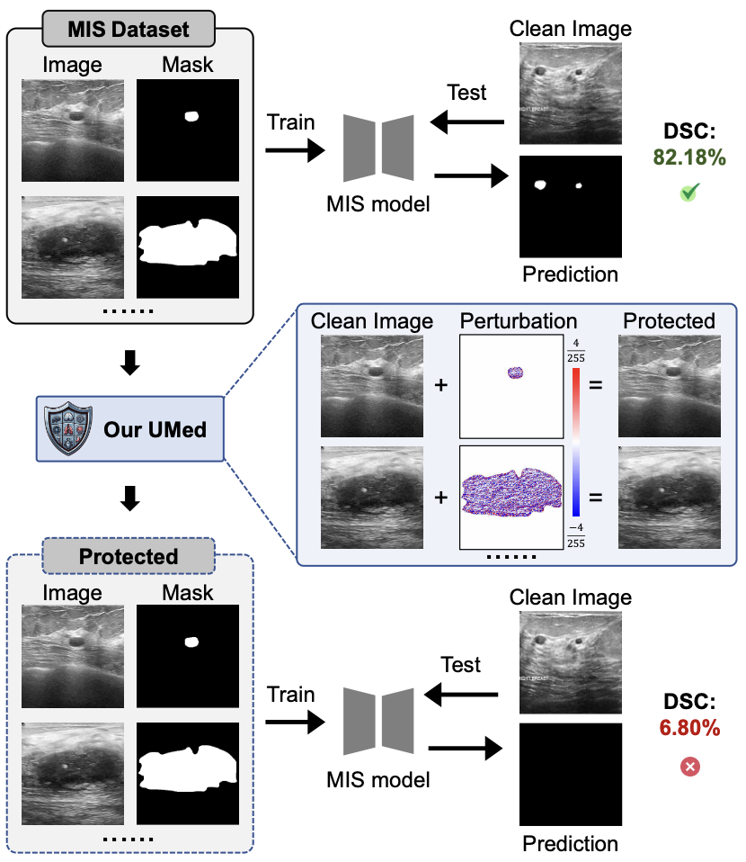
TMI (major revision)
Safeguarding Medical Image Segmentation Datasets against Unauthorized Training via Contour-and Texture-Aware Perturbations
Yi Yu† , Song Xia, Jue Jiang, Haoran Wang, Zitong Yu, Yizhong Liu, Ying Fu, Shuai Wang, Wenzhong Tang, Alex C. Kotmajor revision by IEEE Transactions on Medical Imaging (TMI) , 2025
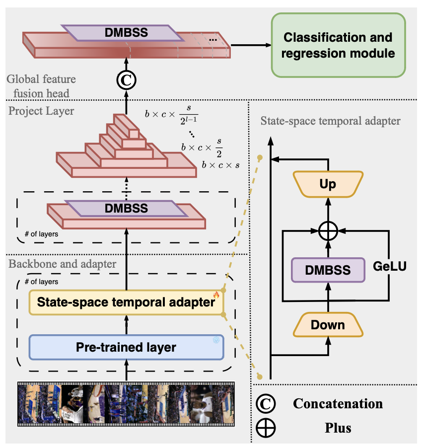
TMM (minor revision)
MambaTAD: When State-Space Models Meet Long-Range Temporal Action Detection
Yi Yu† , Shijian Lu, Deepu Rajan, Boon Poh Ng, Alex C. Kot, Xudong Jiangminor revision by IEEE Transactions on Multimedia (TMM) , 2025
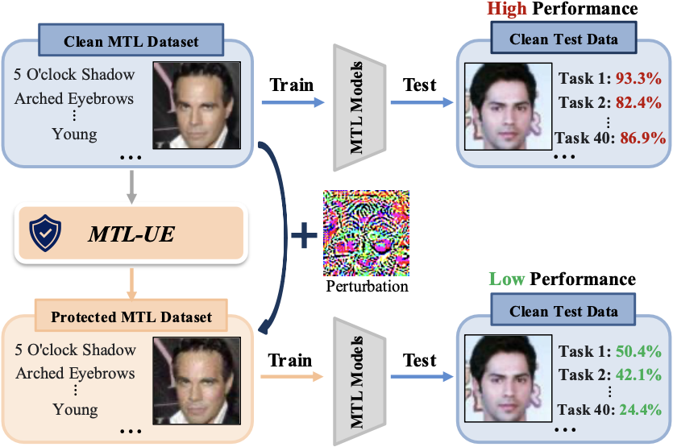
ICML'25
MTL-UE: Learning to Learn Nothing for Multi-Task Learning Yi Yu , Song Xia, Siyuan Yang, Chenqi Kong, Wenhan Yang, Shijian Lu, Yap-Peng Tan, Alex C. KotInternational Conference on Machine Learning (ICML) , 2025Paper
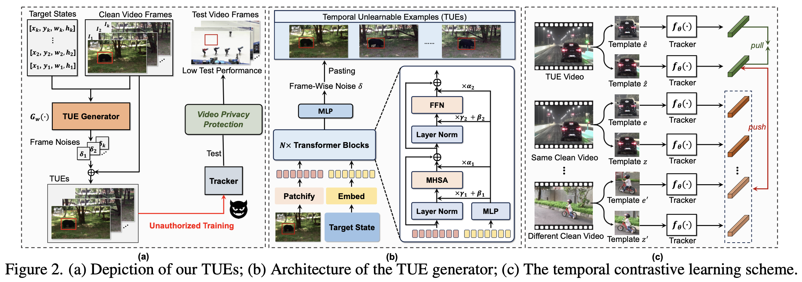
ICCV'25
Temporal Unlearnable Examples: Preventing Personal Video Data from Unauthorized Exploitation by Object Tracking Yi Yu* , Chenqi Kong, Ziquan Liu, Jia Wan, Haoliang Li, Alex Kot, Antoni B. ChanInternational Conference on Computer Vision (ICCV) , 2025Paper
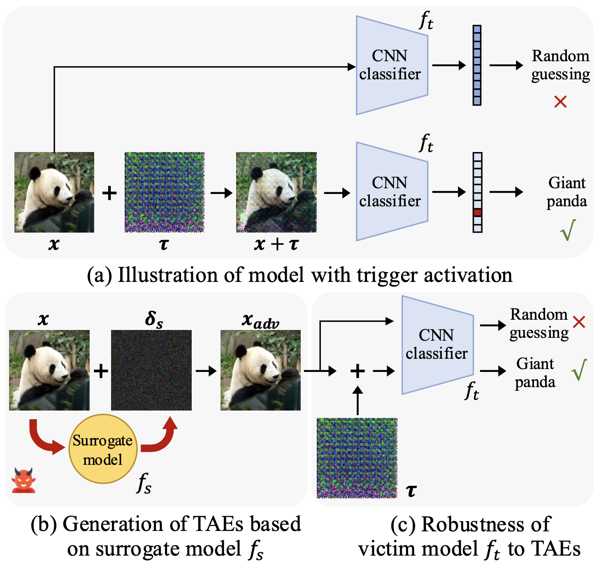
TIFS'25
Towards Model Resistant to Transferable Adversarial Examples via Trigger Activation Yi Yu , Song Xia, Xun Lin, Chenqi Kong, Wenhan Yang, Shijian Lu, Yap-Peng Tan, Alex C. KotIEEE Transactions on Information Forensics and Security (TIFS) , 2025Paper
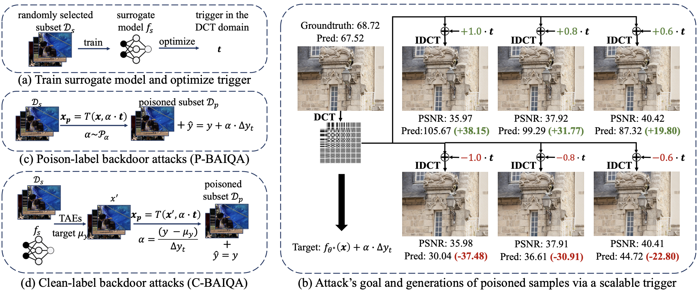
AAAI'25
Backdoor Attacks against No-Reference Image Quality Assessment Models via a Scalable Trigger Yi Yu , Song Xia, Xun Lin, Wenhan Yang, Shijian Lu, Yap-peng Tan, Alex C. KotAAAI Conference on Artificial Intelligence (AAAI) , 2025Paper
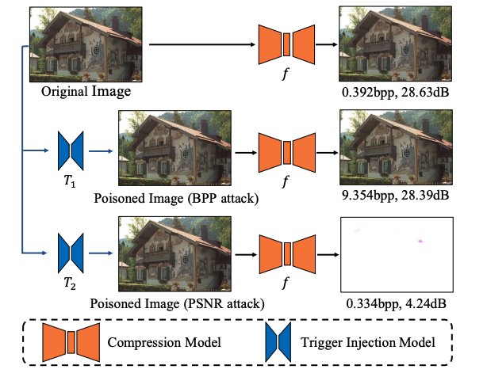
TPAMI'24
Robust and Transferable Backdoor Attacks Against Deep Image Compression With Selective Frequency Prior Yi Yu , Yufei Wang, Song Xia, Wenhan Yang, Shijian Lu, Yap-Peng Tan, Alex C. KotIEEE Transactions on Pattern Analysis and Machine Intelligence (TPAMI) , 2024Paper
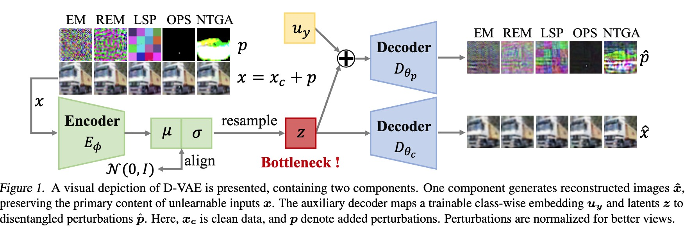
ICML'24
Purify Unlearnable Examples via Rate-Constrained Variational Autoencoders Yi Yu , Yufei Wang, Song Xia, Wenhan Yang, Shijian Lu, Yap-peng Tan, Alex C. KotInternational Conference on Machine Learning (ICML) , 2024Paper
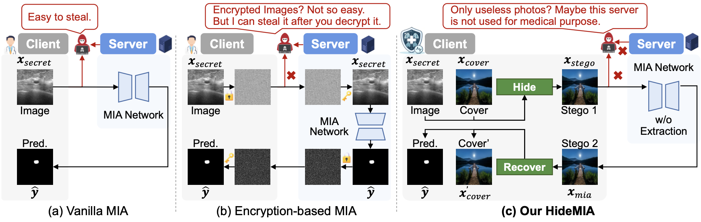
ACM MM'24
HideMIA: Hidden Wavelet Mining for Privacy-Enhancing Medical Image Analysis Yi Yu* , Zitong Yu, Ruohan Meng, Jiale Zhou, Ajian Liu, Yizhong Liu, Shuai Wang, Wenzhong Tang, Zhen Lei, Alex KotACM International Conference on Multimedia (ACM MM) , 2024Paper
CVPR'23
Backdoor Attacks Against Deep Image Compression via Adaptive Frequency Trigger Yi Yu , Yufei Wang, Wenhan Yang, Shijian Lu, Yap-Peng Tan, Alex C. KotIEEE/CVF Conference on Computer Vision and Pattern Recognition (CVPR) , 2023Paper
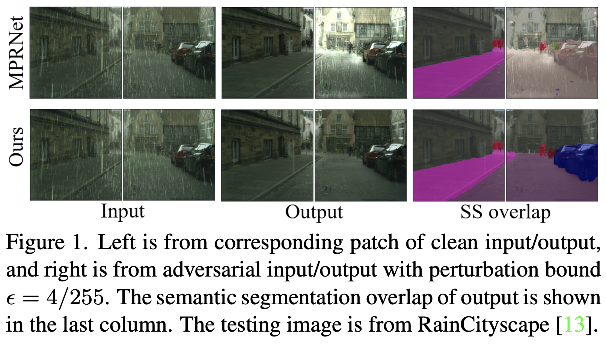
CVPR'22
Towards Robust Rain Removal Against Adversarial Attacks: A Comprehensive Benchmark Analysis and Beyond Yi Yu , Wenhan Yang, Yap-Peng Tan, Alex C. KotIEEE/CVF Conference on Computer Vision and Pattern Recognition (CVPR) , 2022Paper
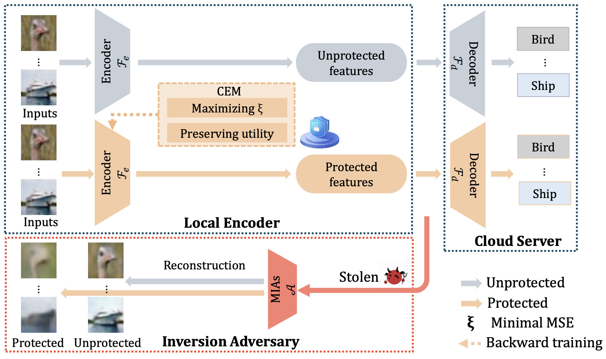
CVPR'25
Theoretical Insights in Model Inversion Robustness and Conditional Entropy Maximization for Collaborative Inference Systems Yi Yu , Xun Lin, Henghui Ding, Lingyu Duan, Xudong JiangIEEE/CVF Conference on Computer Vision and Pattern Recognition (CVPR) , 2025Paper
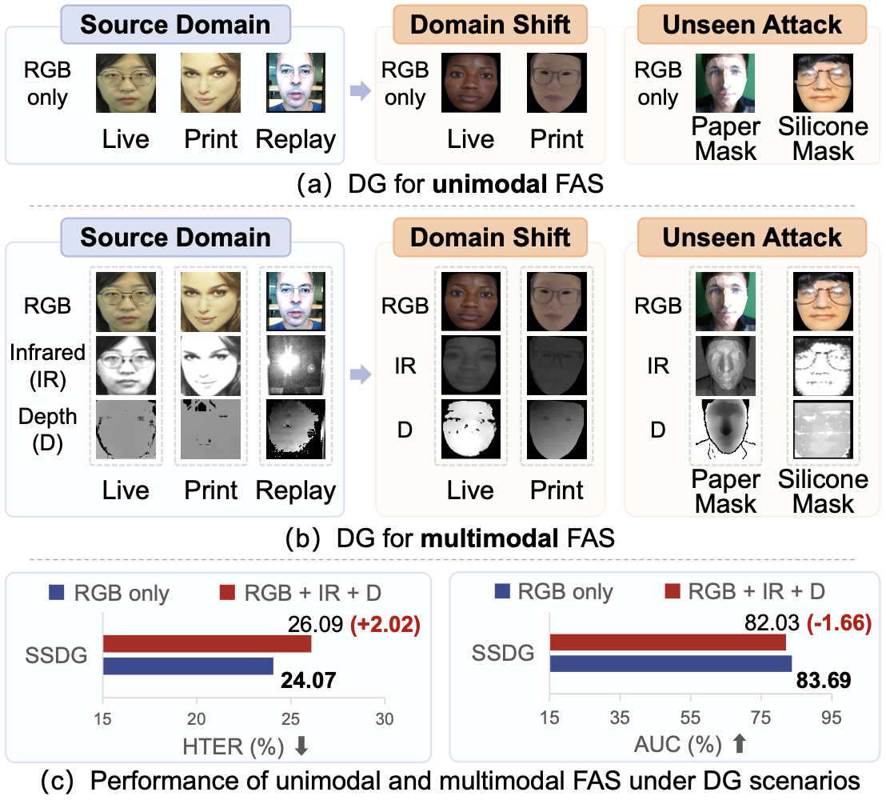
TPAMI'25
Reliable and Balanced Transfer Learning for Generalized Multimodal Face Anti-Spoofing Yi Yu , Jun Wan, Zhen Lei, Xiaochun Cao, Alex C. KotIEEE Transactions on Pattern Analysis and Machine Intelligence (TPAMI) , 2025Paper
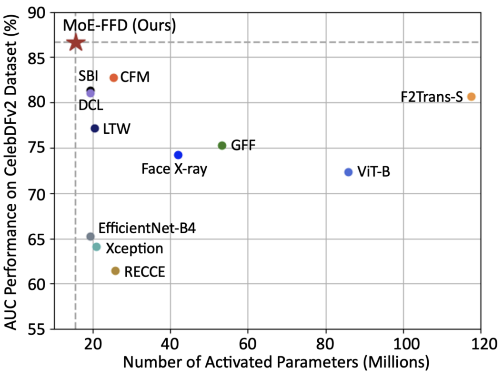
TDSC'25
MoE-FFD: Mixture of Experts for Generalized and Parameter-Efficient Face Forgery Detection Yi Yu , Haoliang Li, Zengwei Zheng, Shiqi Wang, Alex C. KotIEEE Transactions on Dependable and Secure Computing (TDSC) , 2025Paper
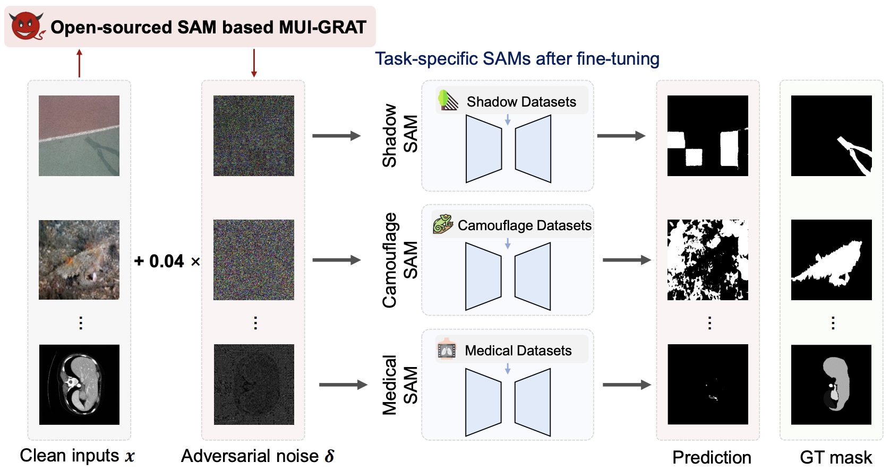
NeurIPS'24
Transferable Adversarial Attacks on SAM and Its Downstream Models Yi Yu , Xun Lin, Henghui Ding, Lingyu Duan, Xudong JiangAnnual Conference on Neural Information Processing Systems (NeurIPS) , 2024Paper
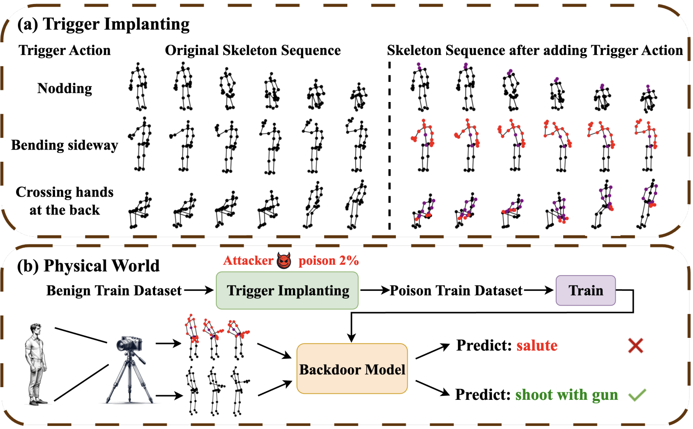
ECCV'24
Towards Physical World Backdoor Attacks against Skeleton Action Recognition Yi Yu , Siyuan Yang, Jun Liu, Kwok Yan Lam, Alex C. KotEuropean Conference on Computer Vision (ECCV) , 2024Paper
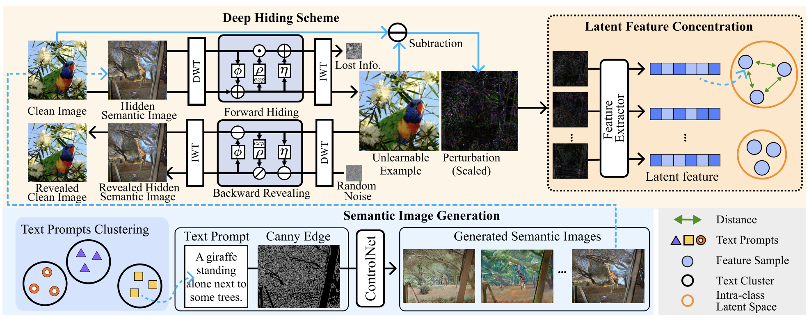
TIFS'24
Semantic Deep Hiding for Robust Unlearnable Examples Yi Yu , Siyuan Yang, Bingquan Shen, Alex C. KotIEEE Transactions on Information Forensics and Security (TIFS) , 2024Paper
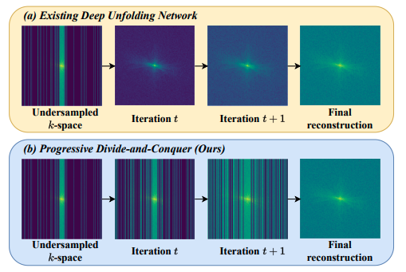
CVPR'24
Progressive Divide-and-Conquer via Subsampling Decomposition for Accelerated MRI Yi Yu , Hao Cheng, Bihan WenIEEE/CVF Conference on Computer Vision and Pattern Recognition (CVPR) , 2024Paper
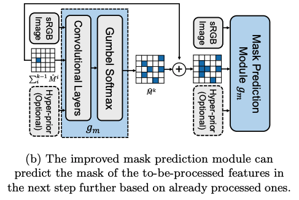
IJCV'24
Beyond Learned Metadata-based Raw Image Reconstruction Yi Yu , Wenhan Yang, Lanqing Guo, Lap-Pui Chau, Alex C. Kot, Bihan WenInternational Journal of Computer Vision (IJCV) , 2024Paper
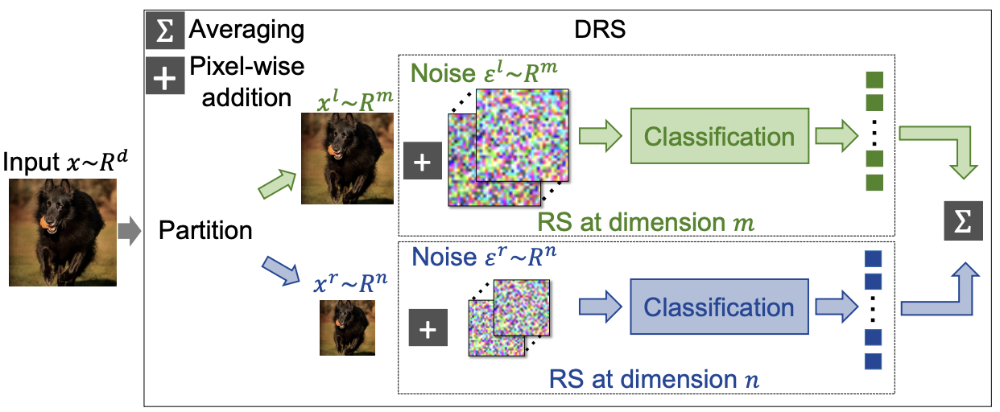
ICLR'24
Mitigating the Curse of Dimensionality for Certified Robustness via Dual Randomized Smoothing Yi Yu , Xudong Jiang, Henghui DingInternational Conference on Learning Representations (ICLR) , 2024Paper
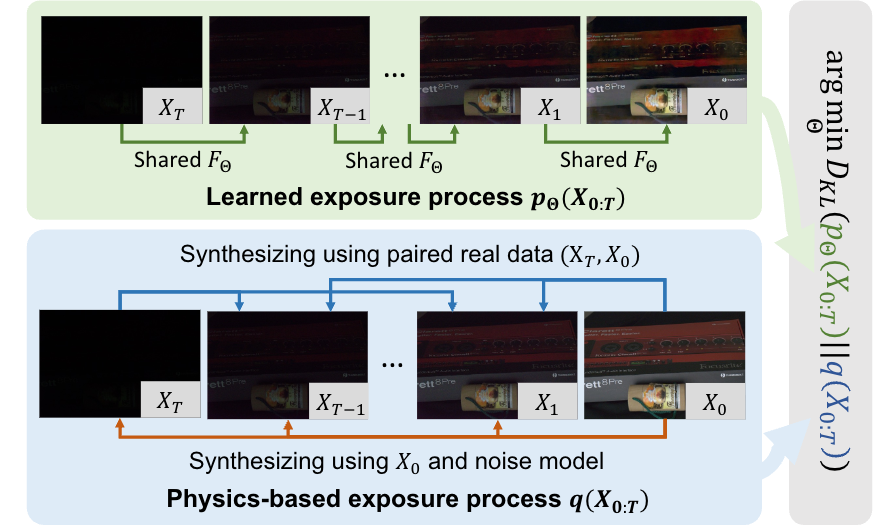
ICCV'23
ExposureDiffusion: Learning to Expose for Low-light Image Enhancement Yi Yu , Wenhan Yang, Lanqing Guo, Lap-Pui Chau, Alex C. Kot, Bihan WenInternational Conference on Computer Vision (ICCV) , 2024Paper
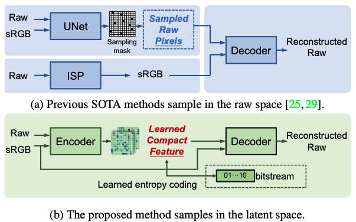
CVPR'23
Raw Image Reconstruction with Learned Compact Metadata Yi Yu , Wenhan Yang, Lanqing Guo, Lap-Pui Chau, Alex C. Kot, Bihan WenIEEE/CVF Conference on Computer Vision and Pattern Recognition (CVPR) , 2023Paper
Professional Service
Journal/Conference reviewer: TPAMI, TIP, TIFS, CVPR, NeurIPS, ICLR, ICML, ACM MM, AAAI, KDD
Last updated: Aug 21, 2025